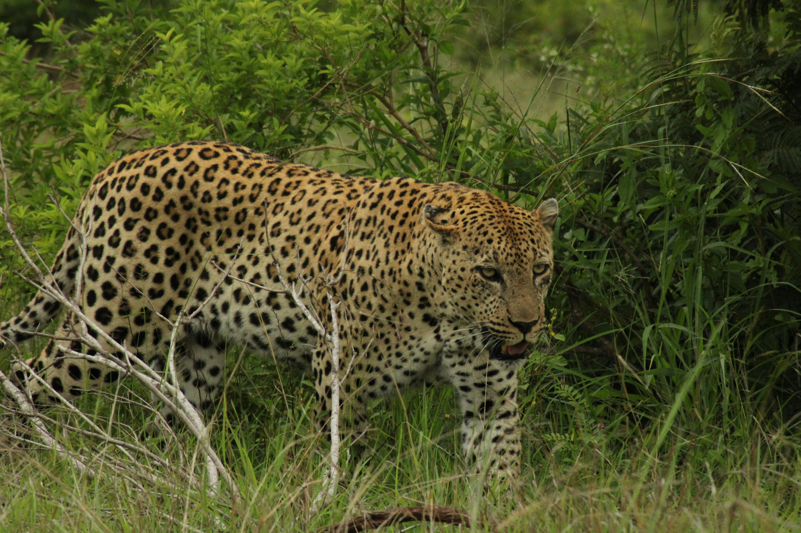

The African Leopard
Diet & Habitat
Diet: Carnivore. Leopards are opportunistic hunters with the broadest diet of all big cats, eating everything from beetles to antelope.
Habitat: Highly adaptable, they live in mountains, forests, and even deserts, but prefer areas with trees for stalking and safety.
Fun Facts
- Leopards are incredibly strong and can carry prey twice their weight high up into trees.
- Unlike lions, leopards are solitary animals that prefer to live and hunt alone.
- They are excellent swimmers and are one of the few big cats that enjoy the water.